proximal_cconj_l1¶
-
odl.solvers.nonsmooth.proximal_operators.proximal_cconj_l1(space, lam=1, g=None, isotropic=False)[source]¶ Proximal operator factory of the convex conj of the l1-norm/distance.
Function for the proximal operator of the convex conjugate of the functional
FwhereFis an l1-norm (or distance to g, if given):F(x) = lam ||x - g||_1
with x and g elements in
spaceand scaling factor lam.Parameters: space :
LinearSpaceorProductSpaceofLinearSpacespacesDomain of the functional F
lam : positive float, optional
Scaling factor or regularization parameter.
g :
spaceelement, optionalAn element in
space. Default:space.zero.isotropic : bool, optional
If
True, take the vectorial 2-norm point-wise. Otherwise, use the vectorial 1-norm. Only available ifspaceis aProductSpace.Returns: prox_factory : function
Factory for the proximal operator to be initialized
See also
proximal_l1- proximal without convex conjugate conjugate
Notes
The
 -norm/distance
-norm/distance  is the functional
is the functional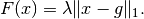
The convex conjugate 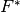 of
is given by the indicator
function of the set 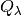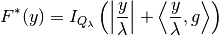
where is a hypercube centered at the origin with width 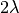.
For a step size
 , the proximal operator of
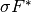 is given by
, the proximal operator of
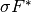 is given by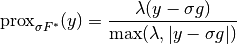
An alternative formulation is available for
ProductSpace‘s, in which case theisotropicparameter can be used, giving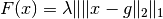
In this case, the dual is
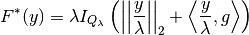
For a step size
, the proximal operator of
is given by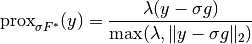
where
 thresholds the lower bound of
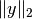 point-wise.
thresholds the lower bound of
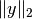 point-wise.